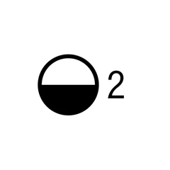
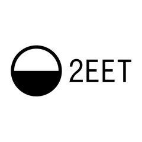
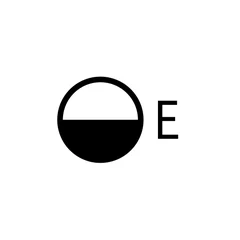
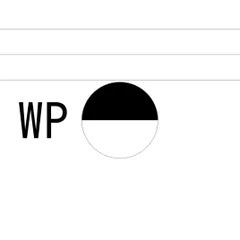
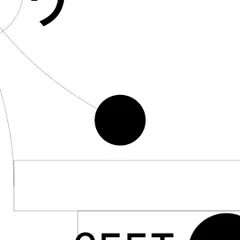
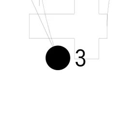
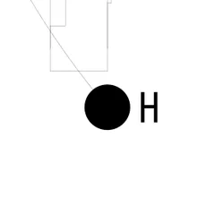

電気図面の数量拾い・部材拾い
まずは図面1枚、
無料で拾います！
その図面、写真で送るだけ。
- スマホの写真でもOK
- PDF・紙のスキャン、どれでも
1枚目は無料！ここから
送るだけ！
送るだけ！
 パソコンでご覧の方は
パソコンでご覧の方はスマホのLINEで読み取って送れます

色分け
して
返します！
して
返します！
電気図面の数量拾い・部材拾い
その図面、写真で送るだけ。
パソコンでご覧の方は＼ まずはお試し！ 1枚目は無料で拾います ／
電気図面の記号って、ほんっとに！複雑ですよね～（配線用図記号）

コンセント
接地極付
エアコン用
防水
片切
3路
ほたるぜんぶ形がちょっとずつちがう…！
それ、まるごとこっちでやります！
とにかく安い！正確！早い！便利！！！
1枚目は無料。2枚目からも図面を見てお見積り
色分けしてプロの目でダブルチェック
図面を見て納期をすぐお知らせ
LINEで写真を送るだけ。リスト・お見積りまでまとめて

図面を写真かPDFで送るだけ
| コンセント 2口 | 11 |
| 接地極付 2口 | 5 |
| エアコン用 | 2 |
| 防水（屋外） | 2 |
| 片切スイッチ | 10 |
| 3路スイッチ | 3 |
| ほたるスイッチ | 3 |
| 合計 | 36 |
色分け図面＋数量表。番号で1つずつ照らせます
おおっ！番号で照らせる！
色分けしてプロの目でダブルチェックします！
正解率99.9%が基準です
見本は提案例の住宅の図面です。見本をPDFで見る（配線図・色分け図面・数量表）
コンセント何個？スイッチ何個？
数えるの、ぜんぶやります！
拾った数から部材リストを作って、単価×数量のお見積りまでまとめてお渡し！
記号を色分けして1つずつ数える
| 部材 | 数量 |
|---|---|
| 埋込スイッチ | 16 |
| スイッチハンドル | 16 |
| 埋込コンセント | 18 |
| 取付枠 | 28 |
| プレート | 28 |
| 防水コンセント | 2 |
取付枠・プレート・ハンドルまで
| 部材 | 数量 | 単価 | 金額 |
|---|---|---|---|
| 埋込スイッチ | 16 | 御社の 単価表・ メーカー表を 入れます | |
| スイッチハンドル | 16 | ||
| 埋込コンセント | 18 | ||
| 取付枠 | 28 | ||
| プレート | 28 | ||
| 防水コンセント | 2 | ||
| 合計 | 単価×数量 | ||
単価×数量で、そのまま使える形に
こ、こんなに美しいリストに！！！拾い出しで困っていた私が…
パナソニック コスモシリーズ ワイド21など、ご指定のメーカー・シリーズに合わせます。数え方は御社の積算ルールに合わせます。
拾い出しの残業、もうやめませんか？
1枚目は無料！
無理な営業はしません！
とにかく 安い！正確！早い！便利！！！
1枚目は無料。2枚目からも図面を見てお見積り
色分けしてプロの目でダブルチェック
図面を見て納期をすぐお知らせ
LINEで写真を送るだけ。リスト・お見積りまでまとめて
まずは図面1枚、送ってみてください！
1枚目は無料！
無理な営業はしません！